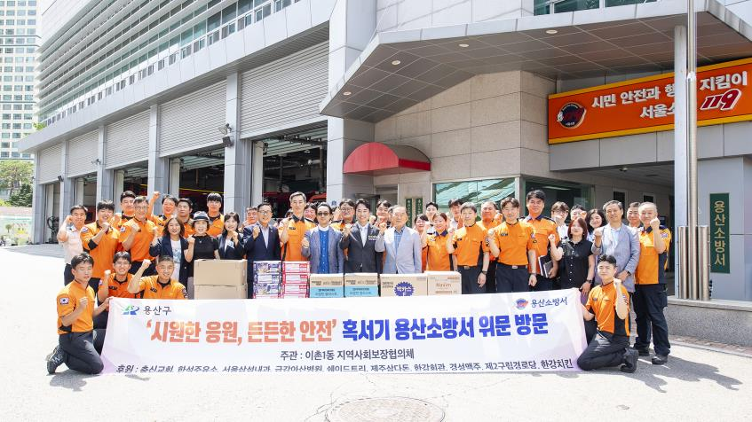

용산 이촌1동, 폭염 속 헌신하는 소방대원에 위문품 전달
지역 10곳 기업·단체 뜻 모아…수박·이온음료 등 전달

[시사포커스 / 김재록 기자] 서울 용산구(구청장 김경대) 이촌1동이 지난 30일 오후 2시 용산소방서를 방문해 폭염과 각종 재난 현장에서 구민의 생명과 안전을 위해 헌신하는 소방관들을 격려하고 위문품을 전달했다. 행사는 이촌1동 지역사회보장협의체(위원장 고재신)가 주관했다.
위문품은 수박과 이온음료, 자양강장제, 커피믹스, 컵라면 등으로 꾸렸다. 이촌1동에 위치한 기업과 단체가 함께 뜻을 모아 후원에 참여했다. 후원사는 충신교회, 한석주유소, 서울삼성내과, 금강아산병원, 쉐이드트리, 제주삼다돈, 한강회관, 경성맥주, 제2구립경로당, 한강치킨 등 10곳이다.
전달식에는 김경대 용산구청장을 비롯해 이촌1동 지역사회보장협의체 위원장 및 위원, 후원사 관계자, 서영배 용산소방서장 등 50여 명이 참석해 현장 근무자들에게 감사와 응원의 뜻을 전했다. 김경대 용산구청장은 "구민의 안전을 위해 밤낮없이 헌신하는 소방대원 여러분의 노고에 깊이 감사드린다"며 "앞으로도 지역사회의 안전을 위해 유관기관과 긴밀히 협력하며 따뜻한 공동체를 만들어 가는 데 최선을 다하겠다"고 밝혔다.
📌 출처: 용산구 보도자료